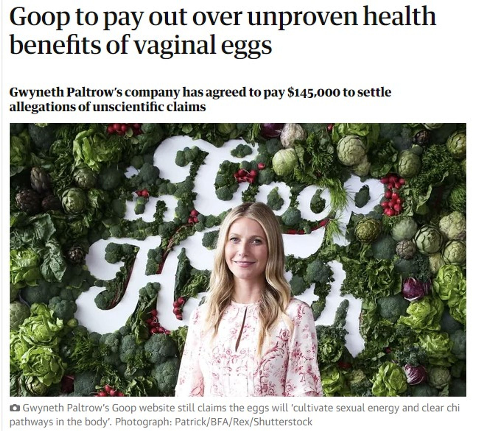
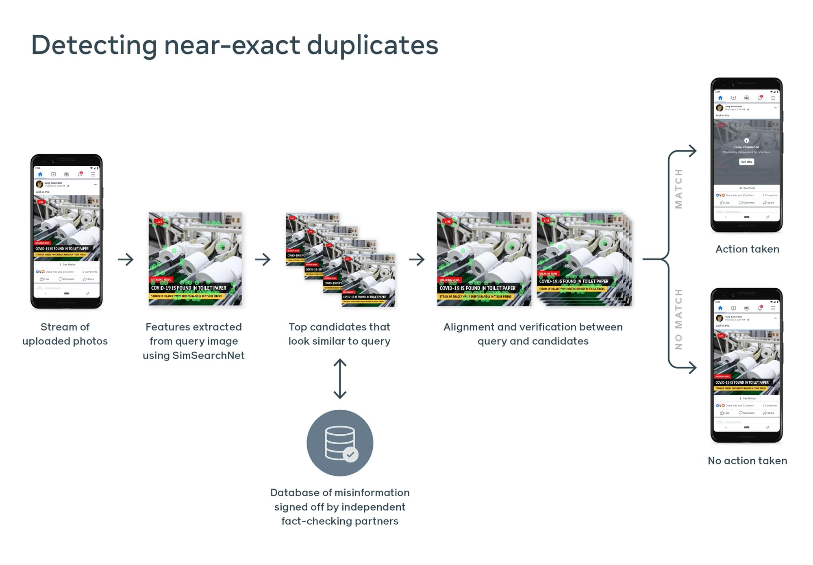
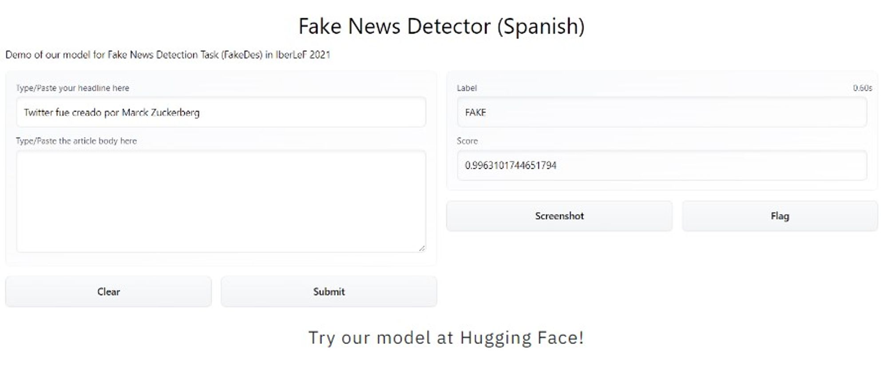
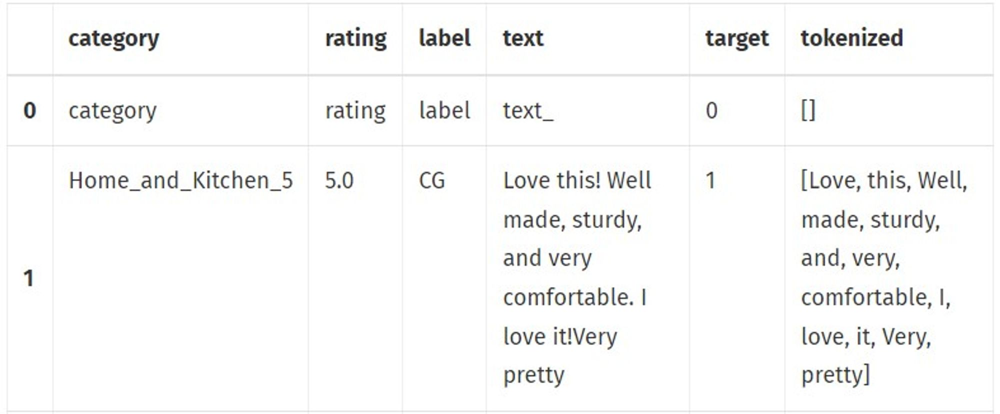

Humans vs Misinformation - an interactive website on misinformation
What is misinformation?
Before Social Networking Services, such as Facebook or Instagram, rumors took time to reach people who are physically far away unless it was aired on television or radio. The fast spreading of information was restricted to those who had power in the past. Now, the contemporary world contains many ways for both individuals and diverse organizations to have the power to make their voices heard, which has made a world where rumors spread easily. Now, misinformation can be made and spread in a matter of seconds to different continents. Some may have heard of Gwyneth Paltrow scamming her followers with health related products made by her brand, Goop.
Figure 1. An image of her and her brand ‘Goop’ mentioned in a article by the Guardian. This article tells how she scammed a lot of her followers to pay for her product to put a jade egg in the vagina overnight for women’s health and she was accused to settle allegations of unscientific claims.
This provides an insight of what ‘misinformation’ means. As the name tells, according to American Psychological Association(APA) misinformation is still an information but has a wrong parts inside made to manipulate the receiver of the message into an activity or thought the source of misinformation wants. From the Ukraine and Russia war in 2022, the misinformation has been used in many ways such as to provide confidence to their soldier, make the other country the villain that has to be defeated. The Goop incident of Gwyneth Paltrow is to make her followers buy her products for their health, which is not supported by any scientific evidences. From these examples, misinformation is generated to have a certain effect on the target audience, which means that detecting misinformation and handling it is very important for contemporary human to keep their life to have a full autonomy on their decisions and to evaluate the given information critically.
As we look around, misinformation can be delivered in many different types. A voice, written language, image, video, and etc. Because of this nature that the information can be delivered in diverse ways, there are differences on how to tackle misinformation. From this post, we are going to cover 3 different ways of finding and treating misinformation based on the data type and how it is treated. Also, for each tactic, we are going to introduce a service that lies out there for you to check it out on your own and see for yourself that there are many organizations that are devoted to fight against misinformation. After the introduction to the 3 tactics and their models, this post will guide you through some codes on how to make a detector on your own!
How can we detect misinformation?
Detecting misinformation on images
Misinformation via photo or video has been growing. We’ve heard of things like Deepfake hurting a life of others with revenge porn and so. Because of this, Facebook has been fighting off with these misinformation by implementing a State-of-the-Art(SOTA) model called SimSearchNet++. SimSearchNet++ is an AI model that is used to identify misinformation on images. This is important for platforms that share information via photos such as Instagram. The algorithm has a distance metric which shows the images that are matched together. Even if one of the images is cropped or blurred, the model can still detect it as a match. Using OCR or optical character recognition, the model can also match the images that have texts on them. Optical character recognition is the technology of identifying the letters on images and digitally transcribing them (reading the text on an image). “The model is trained using self-supervised learning to match variations of the same image with precision” (Biswas, 2021). It quickly trains and allows the trained model to detect the difference from the reference or a.k.a. ‘original’ and the ‘reformed’ video or image. Which means that when the ‘reformation’ of information is detected, it can be put to a screening whether it is a misinformation or not.
Figure 2. Simplified diagram image on how SimSearchNet++ works. Image from Facebook
SimSearchNet++ is used to match images that are similar together, so it will be really helpful for data that is shared via images but this does not apply to videos. Hence, it will not be really helpful for platforms like TikTok or YouTube which are two of the biggest platforms to share information. The model is said to be accurate at detecting variations of the same image but it can also trigger some false positives. With the OCR technology, the model is even better at detecting images that include texts as it transcribe the texts and group/match the images. If I were to use this model at detecting misinformation, I will use it on platforms that include images, it can be on a social media platform such as Instagram or on a reviewing service such as Yelp. I will not use it in a platform where it depends mainly on videos. I will also be aware that false positives is a possibility so I can allow for a “report” button that people can use to disagree when their posts are shown to be misinformation. Then, a human can check for these cases. This will leave less work for human workers than if the model does not exist. As for ethical concerns, Facebook has been using this to fight the marketplace images and now the model is running globally on new Marketplace listings to tell people whether their product is real or not. It has allowed people to have a higher precision on finding a product that they really need by searching during COVID19. So, it has built some trust from consumers who are trying to find the thing they need as well as screening mischievous products away from the customer. Also, it detects harmful content before showing it to everyday users, which allows users to choose whether they want to see the content or not. There are many ways to have the model to be implemented for social good like this and even without noticing, the effort on fighting off misinformation is already in action.
Detecting misinformation in Texts (News)
Detecting misinformation in texts can be done using AI models that uses a set of metrics or features that we want to focus on. These features can be about the text itself such as the sentiment of a review and it can be about other things surrounding the review text such as how many upvotes it got or how many reviews this reviewer have left before. The main idea is that we choose a set of metrics that we want to use to assess how fake or real a text is.
We will explain the idea behind a model that wants to classify whether a text is real or fake based only on the content of the text. To do so, we will need to do some pre-processing to prepare the texts to be understood by the machine. This means we will use NLP or natural language processing. This process will include tokenizing the words, for example, and using mathematical algorithms such as Porter Stemmer Algorithm(PSA) or Lemmatization which is an algorithm that returns the words to their roots so for example will return the word “player” to “play” and then we can also use sentiment analysis to understand how positive or negative these words and we can give a score that we will use as an input to our model. This is an important input/metric as fake reviews tend to have strong feelings associated with them.
The next step is to use a machine learning model to do the selection process. There are different models that can be used for classification or labelling with different accuracy levels. I would say although we would be able to get an idea of how suitable each model is to our data based on research, we would still find two or three suitable models that we do not entirely know which one will be the best in terms of efficiency and accuracy and this will require us to start testing and experimenting with the data we have. In part 3, we will be investigating how the code works in detail.
Figure 4. Narrativa’s model on detecting fake news in Espanol from Narrativa homepage. It reads the text headline and the body and then returns a score on how likely it is going to be a fake news. And from that, if the score is high, it will label the texts as ‘Fake’.
One example of the use of Natural Language Processing(NLP) and machine learning to detect misinformation in real life is Narrativa which is actually available to everyone to use. Their goal is to detect misinformation mainly on social networks such as Twitter and Facebook.
Hands On Activity: Before Applying NLP models. (NLP Pre-processing)
For this section, most of the codes and ideas comes from Matt Clarke’s blog post(2021). And before we start exploring on how the NLP models and techniques are applied, let’s take a look on how we need to pre-process the data so that we can make our own handy-dandy detector afterwards using TfidVectorizer to vectorize the text to vectors and other ML classification algorithms. The dataset will be Fake Reviews Dataset (2021) that contains 20k fake reviews and 20k real product reviews.
Before we start, it is important on knowing how NLP in general works in the AI field. The main steps are explained from section 2-3, which is that we need to make texts into a form where computer can calculate and then do a classification after the model’s computation is done. The classification will depend on the label of the data. For our case, the data will be labeled as misinformation(fake-review) and real information(real-review). So, in our case, the classification model will differentiate the review(texts), whether it is real or fake, depending on the text vectors of reviews and other features(columns on data) that has been gathered together with the review texts such as length, sentiment, coherence, and etc. But for the sake of the experience, let’s just stick with the text as a independent variable for classification.
Let’s give it a start!
#importing necessary packages
#non AI libraries
import time
import pandas as pd
import numpy as np
import nltk
from nltk.corpus import stopwords
from sklearn.pipeline import Pipeline
from sklearn.model_selection import train_test_split
from sklearn.model_selection import cross_val_score
from sklearn.metrics import accuracy_score
from sklearn.metrics import f1_score
from sklearn.metrics import roc_auc_score
from sklearn.metrics import precision_score
from sklearn.metrics import recall_score
from sklearn.metrics import classification_report
## Vectorization library
from nltk.stem.porter import PorterStemmer
from sklearn.feature_extraction.text import TfidfVectorizer
## Classification ML libraries
### This will be used after pre-processing
from sklearn.svm import LinearSVC
from xgboost import XGBClassifier
from lightgbm import LGBMClassifier
from catboost import CatBoostClassifier
from sklearn.neighbors import KNeighborsClassifier
from sklearn.tree import DecisionTreeClassifier
from sklearn.tree import ExtraTreeClassifier
from sklearn.linear_model importRidgeClassifier
from sklearn.linear_model import SGDClassifier
from sklearn.ensemble import RandomForestClassifier
from sklearn.ensemble import AdaBoostClassifier
from sklearn.ensemble import BaggingClassifier
from sklearn.naive_bayes import BernoulliNB
fromsklearn.naive_bayes import MultinomialNB
# set Pandas option
pd.set_option('max_colwidth', None)
And now we load the data and see how the data looks like
# loading data after downloading from the given link
df=pd.read_csv('fake reviews dataset.csv')
df.head()
For the computer to calculate the given data, we need it to have the data treated with some magic. This magic will be replacing ‘enter(\n)’ to a single space and creating a column to say that row of data is fake(1) or real(0) using integers because they are currently in text that specifies the data to be ‘fake’ or ‘real’. By changing the text of ‘fake’ and ‘real’ into 1 and 0, computer will be able to have easier time classifying the given data during training, and testing.
# from enter to space
df['text']=df['text'].str.replace('\n, ' ')
# from 'fake' and 'real' to 1 and 0
df['target']=np.where(df['label']=='CG', '1', 0)
To use PSA, we need to have a bag of words based model, which is the first part of NLP preprocessing and this will make the punctuations into words so that everything can be made into a vector afterwards.
def punctuation_to_features(df, column):
"""Identify punctuation within a column and convert to a text
representation.
Args:
df (object): Pandas dataframe.
column (string): Name of column containing text.
Returns:
df[column]: Original column with punctuation converted to
text,
i.e. "Wow! > "Wow exclamation"
df[column]=df[column].replace( '!', 'exclamation')
df[column]=df[column].replace( '?', 'question')
df[column]=df[column].replace( '\'', 'quotation')
df[column]=df[column].replace( '\"', 'quotation')
return df[column]
df['text']=punctuation_to_features(df, 'text')
And from this text column, we need to make it tokenized which makes the string to become a list that contains words.
nltk.download('punkt')
def tokenize(column):
"""Tokenizes a Pandas dataframe column and returns a list of tokens.
Args:
column: Pandas dataframe column (i.e. df['text']).
Returns:
tokens (list): Tokenized list, i.e. [Donald, Trump, tweets]
"""
tokens=nltk.word_tokenize(column)
return [w for w intokens if w.isalpha()]
df['tokenized'=df.apply(lambda x: tokenize(x['text']), axis=1)
df[0:2]
Then the result that you will see is:
And before we progress to make vectors, we have to understand that in natural language, there are many words that are just sitting there with not much of a meaning. And removing these high-frequency words that has less meanings can help the model to speed up. For every language, this word set is different. So, by downloading the NLTK’s stop-words library in English setting, we can remove those words from the tokenized list.
nltk.download('stopwords')
def remove_stopwords(tokenized_column):
"""Return a list of tokens with English stopwords removed.
Args:
column: Pandas dataframe column of tokenized data from tokenize()
Returns:
tokens (list): Tokenized list with stopwords removed.
"""
stops = set(stopwords.words("english"))
return [word for word in tokenized_column if not word in stops]
#remove stopwords
df['stopwords_removed'] = df.apply(lambda x: remove_stopwords(x['tokenized']), axis=1)
Now is a time to use Porter Stemming technique to make words into a tree form which converts the words into a simplest root form. So, sleep, slept, sleeping, sleeps, will all become ‘sleep’ after the technique. So, it can be turned into a vector of a single word and see how that appears in the parts of the sentence. It does make the sentence look weird when there is not enough data when the AI regenerates a sample, such as ‘I love sleep’ is going to be the outcome rather than ‘I love sleeping’
def apply_stemming(tokenized_column):
"""Return a list of tokens with Porter stemming applied.
Args:
column: Pandas dataframe column of tokenized data with stopwords removed.
Returns:
tokens (list): Tokenized list with words Porter stemmed.
"""
stemmer = PorterStemmer()
return [stemmer.stem(word).lower() for word in tokenized_column]
df['porter_stemmed'] = df.apply(lambda x: apply_stemming(x['stopwords_removed']), axis=1)
And then we rejoin the words into string from the tokenized list.
def rejoin_words(tokenized_column):
return ( " ".join(tokenized_column))
df['all_text'] = df.apply(lambda x: rejoin_words(x['porter_stemmed']), axis=1)
#and what we will see is
df[['all_text']].head()
Hands On Activity 2: Now is time to start training some ML models for misinformation detection.
Before we start training the classification models, we need to split the existing dataset into two parts at least so that we can test the model afterwards. And to do so, it is important that we randomly select the data on what to pick or do a bootstrapping, k-folds, or any other methods to make sure that the dataset for training and testing is not fundamentally different. Here, we will just use what python has to offer and has been mostly used from CS156 class of Minerva University that I am used to the most.
X = df['all_text'] #the input
y = df['target'] #classification label
#split the data into test and training (3:7 ratio)
X_train, X_test, y_train, y_test = train_test_split(X, y, test_size=0.3, random_state=1, shuffle=True)
We started with 40k data in total. Ratio of splitting data into two is all up to you. But is usually 4:6, 3:7, or 2:8 depending on how much data we have.
As we have test and training, we can now start to train the classifiers and compare who is the best one to use for this dataset. Also, we need to check whether the best one is actually the best by not only checking high accuracy that goes over the threshold we want but also checking precision, f1 score, and etc. From what we have imported we can test out these.
#classifiers dictionary to contain what classifier has what performance.
classifiers = {}
classifiers.update({"XGBClassifier": XGBClassifier(eval_metric='logloss,
objective='binary:logistic',
)})
classifiers.update({"CatBoostClassifier": CatBoostClassifier(silent=True)})
classifiers.update({"LinearSVC": LinearSVC()})
classifiers.update({"MultinomialNB": MultinomialNB()})
classifiers.update({"LGBMClassifier": LGBMClassifier()})
classifiers.update({"RandomForestClassifier": RandomForestClassifier()})
classifiers.update({"DecisionTreeClassifier": DecisionTreeClassifier()})
classifiers.update({"ExtraTreeClassifier": ExtraTreeClassifier()})
classifiers.update({"AdaBoostClassifier": AdaBoostClassifier()})
classifiers.update({""KNeighborsClassifier": KNeighborsClassifier()})
classifiers.update({"RidgeClassifier": RidgeClassifier()})
classifiers.update({"SGDClassifier": SGDClassifier()})
classifiers.update({"BaggingClassifier": BaggingClassifier()})
classifiers.update({"BernoulliNB": BernoulliNB()})
After training all these (which takes a while and at most 10hrs for each with my laptop) with your local device, using pandas we can check what are the good model and how well they perform on the given test data.
df_models = pd.DataFrame(columns=['model', 'run_time', 'roc_auc', 'roc_auc_std'])
for key in classifiers:
start_time = time.time()
pipeline = Pipeline([("tfidf", TfidfVectorizer()), ("clf", classifiers[key])])
cv = cross_val_score(pipeline, X, y, cv=5, scoring='roc_auc')
row = {'model': key,
'run_time': format(round((time.time() - start_time)/60,2)),
'roc_auc': cv.mean(),
'roc_auc_std': cv.std(),
}
df_models = df_models.append(row, ignore_index=True)
df_models = df_models.sort_values(by='roc_auc', ascending=False)
df_models
From this we see that SGD has done the best job. So, we choose to see the performance in depth
bundled_pipeline = Pipeline([("tfidf", TfidfVectorizer()),
("clf", SGDClassifier())
])
bundled_pipeline.fit(X_train, y_train)
y_pred = bundled_pipeline.predict(X_test)
accuracy_score = accuracy_score(y_test, y_pred)
precision_score = precision_score(y_test, y_pred)
recall_score = recall_score(y_test, y_pred)
roc_auc_score = roc_auc_score(y_test, y_pred)
print('Accuracy:', accuracy_score)
print('Precision:', precision_score)
print('Recall:', recall_score)
print('ROC/AUC:', roc_auc_score)
Result:
Accuracy: 0.8694971145919208
Precision: 0.8909774436090225
Recall: 0.8465660009741841
ROC/AUC: 0.8698581135334829
Discussions from this activity and the result of the codes
There could have been different data preprocessing techniques, different vectorizers, different classifiers, and different hyperparameters for this process. Also, the performance of each models may depend on the dataset that we have, so we don’t know whether SGD classifier will always the one to go. We just need to check things out!
Meanwhile, if the accuracy of 86.9% is below the ideal level that you need for your service or whatsoever, more delicate process can be used to contain other hyperparameter than just text as we did here, or could use different model or vectorization. The best way to go is to understand the dataset in depth and from the fundamental, we build a classifier rather than just forcing a model to learn and do a classification as we did. If we get to tailor the model to meet the specific details of the data, the accuracy and the other performance score will rise maybe even with the simplest and oldest technique available for the job.
This means that when you are thinking of doing a misinformation detector, or any other type of AI making, knowing the field and the data itself as well as the goal for the project will definitely help a lot and have a differentiating power compared to those that exists out there in the market. Hope you have enjoyed the blog post on what are the different branches of misinformation detection exists depending on our perspectives as well as going through a hands on activity of making your own misinformation detector.
Interactive coding example (user input required)
Video explaining in detail the algorithm behind the model